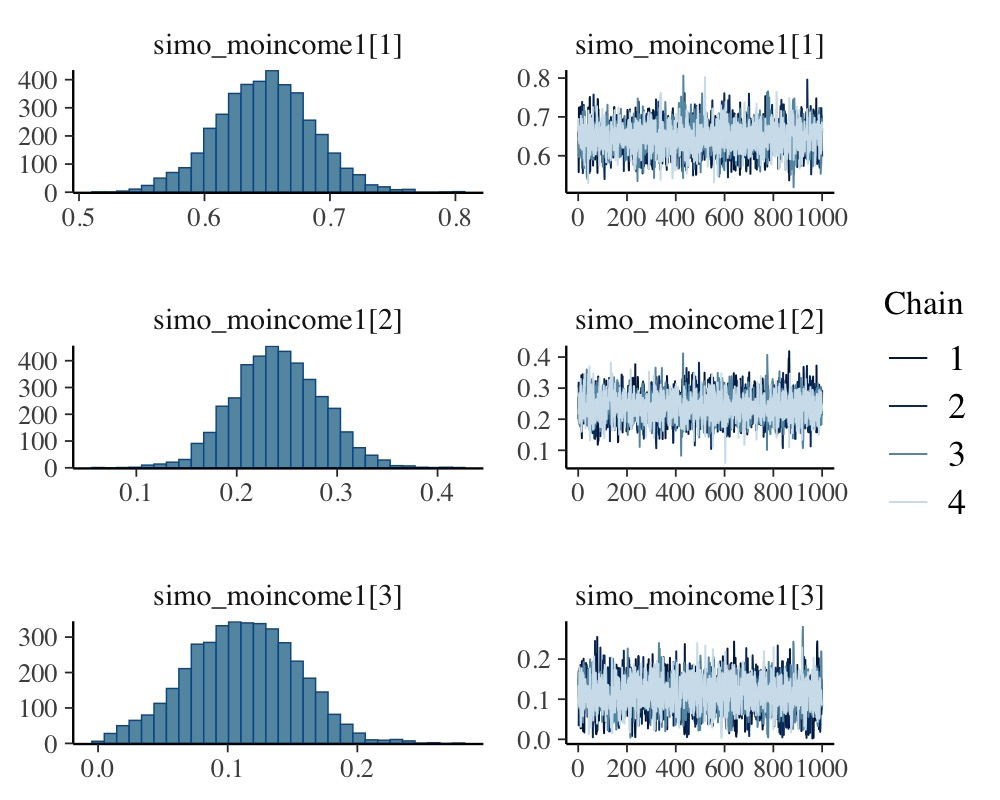
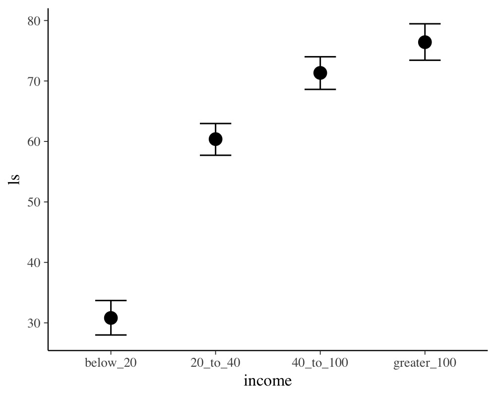
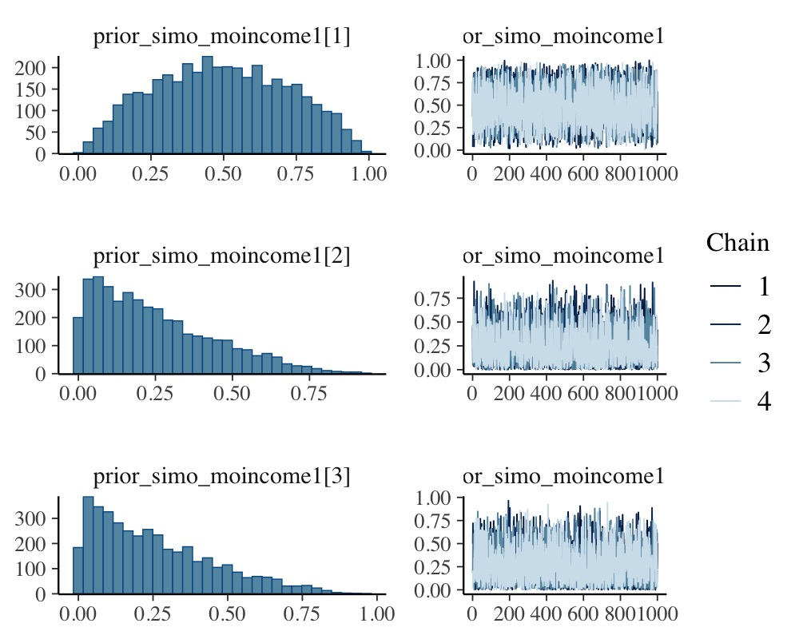
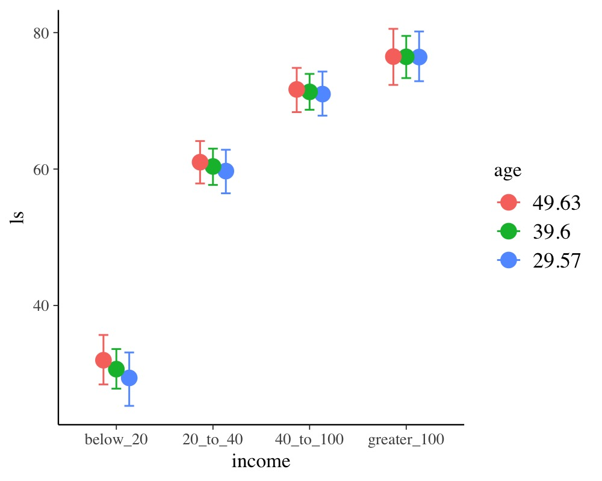

vignettes/brms_monotonic.Rmd
brms_monotonic.RmdThis vignette is about monotonic effects, a special way of handling discrete predictors that are on an ordinal or higher scale (Bürkner & Charpentier, in review). A predictor, which we want to model as monotonic (i.e., having a monotonically increasing or decreasing relationship with the response), must either be integer valued or an ordered factor. As opposed to a continuous predictor, predictor categories (or integers) are not assumed to be equidistant with respect to their effect on the response variable. Instead, the distance between adjacent predictor categories (or integers) is estimated from the data and may vary across categories. This is realized by parameterizing as follows: One parameter, , takes care of the direction and size of the effect similar to an ordinary regression parameter. If the monotonic effect is used in a linear model, can be interpreted as the expected average difference between two adjacent categories of the ordinal predictor. An additional parameter vector, , estimates the normalized distances between consecutive predictor categories which thus defines the shape of the monotonic effect. For a single monotonic predictor, , the linear predictor term of observation looks as follows:
The parameter can take on any real value, while is a simplex, which means that it satisfies and with being the number of elements of . Equivalently, is the number of categories (or highest integer in the data) minus 1, since we start counting categories from zero to simplify the notation.
A main application of monotonic effects are ordinal predictors that can be modeled this way without falsely treating them either as continuous or as unordered categorical predictors. In Psychology, for instance, this kind of data is omnipresent in the form of Likert scale items, which are often treated as being continuous for convenience without ever testing this assumption. As an example, suppose we are interested in the relationship of yearly income (in $) and life satisfaction measured on an arbitrary scale from 0 to 100. Usually, people are not asked for the exact income. Instead, they are asked to rank themselves in one of certain classes, say: ‘below 20k’, ‘between 20k and 40k’, ‘between 40k and 100k’ and ‘above 100k’. We use some simulated data for illustration purposes.
income_options <- c("below_20", "20_to_40", "40_to_100", "greater_100")
income <- factor(sample(income_options, 100, TRUE),
levels = income_options, ordered = TRUE)
mean_ls <- c(30, 60, 70, 75)
ls <- mean_ls[income] + rnorm(100, sd = 7)
dat <- data.frame(income, ls)We now proceed with analyzing the data modeling income
as a monotonic effect.
The summary methods yield
summary(fit1) Family: gaussian
Links: mu = identity; sigma = identity
Formula: ls ~ mo(income)
Data: dat (Number of observations: 100)
Draws: 4 chains, each with iter = 2000; warmup = 1000; thin = 1;
total post-warmup draws = 4000
Regression Coefficients:
Estimate Est.Error l-95% CI u-95% CI Rhat Bulk_ESS Tail_ESS
Intercept 30.82 1.47 27.99 33.69 1.00 2458 2454
moincome 15.20 0.72 13.78 16.64 1.00 2255 2153
Monotonic Simplex Parameters:
Estimate Est.Error l-95% CI u-95% CI Rhat Bulk_ESS Tail_ESS
moincome1[1] 0.65 0.04 0.57 0.72 1.00 3251 2323
moincome1[2] 0.24 0.04 0.16 0.33 1.00 3542 2531
moincome1[3] 0.11 0.04 0.03 0.19 1.00 2778 1509
Further Distributional Parameters:
Estimate Est.Error l-95% CI u-95% CI Rhat Bulk_ESS Tail_ESS
sigma 7.12 0.52 6.20 8.23 1.00 2911 2551
Draws were sampled using sampling(NUTS). For each parameter, Bulk_ESS
and Tail_ESS are effective sample size measures, and Rhat is the potential
scale reduction factor on split chains (at convergence, Rhat = 1).
plot(fit1, variable = "simo", regex = TRUE)
plot(conditional_effects(fit1))
The distributions of the simplex parameter of income, as
shown in the plot method, demonstrate that the largest
difference (about 70% of the difference between minimum and maximum
category) is between the first two categories.
Now, let’s compare of monotonic model with two common alternative
models. (a) Assume income to be continuous:
dat$income_num <- as.numeric(dat$income)
fit2 <- brm(ls ~ income_num, data = dat)
summary(fit2) Family: gaussian
Links: mu = identity; sigma = identity
Formula: ls ~ income_num
Data: dat (Number of observations: 100)
Draws: 4 chains, each with iter = 2000; warmup = 1000; thin = 1;
total post-warmup draws = 4000
Regression Coefficients:
Estimate Est.Error l-95% CI u-95% CI Rhat Bulk_ESS Tail_ESS
Intercept 22.71 2.42 17.94 27.39 1.00 3575 2731
income_num 15.05 0.90 13.23 16.85 1.00 3680 2790
Further Distributional Parameters:
Estimate Est.Error l-95% CI u-95% CI Rhat Bulk_ESS Tail_ESS
sigma 9.56 0.68 8.31 10.94 1.00 3340 2856
Draws were sampled using sampling(NUTS). For each parameter, Bulk_ESS
and Tail_ESS are effective sample size measures, and Rhat is the potential
scale reduction factor on split chains (at convergence, Rhat = 1).or (b) Assume income to be an unordered factor:
contrasts(dat$income) <- contr.treatment(4)
fit3 <- brm(ls ~ income, data = dat)
summary(fit3) Family: gaussian
Links: mu = identity; sigma = identity
Formula: ls ~ income
Data: dat (Number of observations: 100)
Draws: 4 chains, each with iter = 2000; warmup = 1000; thin = 1;
total post-warmup draws = 4000
Regression Coefficients:
Estimate Est.Error l-95% CI u-95% CI Rhat Bulk_ESS Tail_ESS
Intercept 30.59 1.47 27.72 33.47 1.00 2963 2536
income2 29.82 2.04 25.84 33.88 1.00 3051 2569
income3 40.77 2.02 36.79 44.67 1.00 3340 2937
income4 45.98 2.15 41.86 50.21 1.00 3224 2943
Further Distributional Parameters:
Estimate Est.Error l-95% CI u-95% CI Rhat Bulk_ESS Tail_ESS
sigma 7.13 0.52 6.22 8.21 1.00 4005 2816
Draws were sampled using sampling(NUTS). For each parameter, Bulk_ESS
and Tail_ESS are effective sample size measures, and Rhat is the potential
scale reduction factor on split chains (at convergence, Rhat = 1).We can easily compare the fit of the three models using leave-one-out cross-validation.
loo(fit1, fit2, fit3)Output of model 'fit1':
Computed from 4000 by 100 log-likelihood matrix.
Estimate SE
elpd_loo -340.2 7.2
p_loo 4.9 0.8
looic 680.4 14.4
------
MCSE of elpd_loo is 0.0.
MCSE and ESS estimates assume MCMC draws (r_eff in [0.5, 1.1]).
All Pareto k estimates are good (k < 0.7).
See help('pareto-k-diagnostic') for details.
Output of model 'fit2':
Computed from 4000 by 100 log-likelihood matrix.
Estimate SE
elpd_loo -368.7 6.6
p_loo 2.9 0.5
looic 737.4 13.2
------
MCSE of elpd_loo is 0.0.
MCSE and ESS estimates assume MCMC draws (r_eff in [0.7, 1.0]).
All Pareto k estimates are good (k < 0.7).
See help('pareto-k-diagnostic') for details.
Output of model 'fit3':
Computed from 4000 by 100 log-likelihood matrix.
Estimate SE
elpd_loo -340.2 7.2
p_loo 4.9 0.8
looic 680.4 14.3
------
MCSE of elpd_loo is 0.0.
MCSE and ESS estimates assume MCMC draws (r_eff in [0.7, 1.3]).
All Pareto k estimates are good (k < 0.7).
See help('pareto-k-diagnostic') for details.
Model comparisons:
elpd_diff se_diff
fit1 0.0 0.0
fit3 0.0 0.2
fit2 -28.5 5.6 The monotonic model fits better than the continuous model, which is
not surprising given that the relationship between income
and ls is non-linear. The monotonic and the unordered
factor model have almost identical fit in this example, but this may not
be the case for other data sets.
In the previous monotonic model, we have implicitly assumed that all differences between adjacent categories were a-priori the same, or formulated correctly, had the same prior distribution. In the following, we want to show how to change this assumption. The canonical prior distribution of a simplex parameter is the Dirichlet distribution, a multivariate generalization of the beta distribution. It is non-zero for all valid simplexes (i.e., and ) and zero otherwise. The Dirichlet prior has a single parameter of the same length as . The higher the higher the a-priori probability of higher values of . Suppose that, before looking at the data, we expected that the same amount of additional money matters more for people who generally have less money. This translates into a higher a-priori values of (difference between ‘below_20’ and ‘20_to_40’) and hence into higher values of . We choose and , the latter being the default value of . To fit the model we write:
prior4 <- prior(dirichlet(c(2, 1, 1)), class = "simo", coef = "moincome1")
fit4 <- brm(ls ~ mo(income), data = dat,
prior = prior4, sample_prior = TRUE)The 1 at the end of "moincome1" may appear
strange when first working with monotonic effects. However, it is
necessary as one monotonic term may be associated with multiple simplex
parameters, if interactions of multiple monotonic variables are included
in the model.
summary(fit4) Family: gaussian
Links: mu = identity; sigma = identity
Formula: ls ~ mo(income)
Data: dat (Number of observations: 100)
Draws: 4 chains, each with iter = 2000; warmup = 1000; thin = 1;
total post-warmup draws = 4000
Regression Coefficients:
Estimate Est.Error l-95% CI u-95% CI Rhat Bulk_ESS Tail_ESS
Intercept 30.79 1.47 27.96 33.61 1.00 2827 2501
moincome 15.21 0.70 13.78 16.56 1.00 2802 2993
Monotonic Simplex Parameters:
Estimate Est.Error l-95% CI u-95% CI Rhat Bulk_ESS Tail_ESS
moincome1[1] 0.65 0.04 0.58 0.73 1.00 3163 2364
moincome1[2] 0.24 0.04 0.15 0.32 1.00 4006 2284
moincome1[3] 0.11 0.04 0.03 0.19 1.00 3328 2100
Further Distributional Parameters:
Estimate Est.Error l-95% CI u-95% CI Rhat Bulk_ESS Tail_ESS
sigma 7.12 0.53 6.16 8.26 1.00 3285 2318
Draws were sampled using sampling(NUTS). For each parameter, Bulk_ESS
and Tail_ESS are effective sample size measures, and Rhat is the potential
scale reduction factor on split chains (at convergence, Rhat = 1).We have used sample_prior = TRUE to also obtain draws
from the prior distribution of simo_moincome1 so that we
can visualized it.
plot(fit4, variable = "prior_simo", regex = TRUE, N = 3)
As is visible in the plots, simo_moincome1[1] was
a-priori on average twice as high as simo_moincome1[2] and
simo_moincome1[3] as a result of setting
to 2.
Suppose, we have additionally asked participants for their age.
dat$age <- rnorm(100, mean = 40, sd = 10)We are not only interested in the main effect of age but also in the
interaction of income and age. Interactions with monotonic variables can
be specified in the usual way using the * operator:
summary(fit5) Family: gaussian
Links: mu = identity; sigma = identity
Formula: ls ~ mo(income) * age
Data: dat (Number of observations: 100)
Draws: 4 chains, each with iter = 2000; warmup = 1000; thin = 1;
total post-warmup draws = 4000
Regression Coefficients:
Estimate Est.Error l-95% CI u-95% CI Rhat Bulk_ESS Tail_ESS
Intercept 25.46 5.14 14.52 34.57 1.00 1280 2123
age 0.13 0.12 -0.09 0.39 1.00 1265 2101
moincome 16.98 2.55 12.33 22.37 1.00 946 1459
moincome:age -0.04 0.06 -0.18 0.07 1.00 950 1515
Monotonic Simplex Parameters:
Estimate Est.Error l-95% CI u-95% CI Rhat Bulk_ESS Tail_ESS
moincome1[1] 0.64 0.06 0.52 0.75 1.00 1689 1826
moincome1[2] 0.24 0.05 0.14 0.35 1.00 2605 2246
moincome1[3] 0.12 0.05 0.02 0.22 1.00 1697 1316
moincome:age1[1] 0.40 0.25 0.02 0.88 1.00 1943 2244
moincome:age1[2] 0.31 0.22 0.01 0.81 1.00 2146 2350
moincome:age1[3] 0.29 0.22 0.01 0.81 1.00 2190 2081
Further Distributional Parameters:
Estimate Est.Error l-95% CI u-95% CI Rhat Bulk_ESS Tail_ESS
sigma 7.12 0.53 6.17 8.25 1.00 2855 2637
Draws were sampled using sampling(NUTS). For each parameter, Bulk_ESS
and Tail_ESS are effective sample size measures, and Rhat is the potential
scale reduction factor on split chains (at convergence, Rhat = 1).
conditional_effects(fit5, "income:age")
Suppose that the 100 people in our sample data were drawn from 10
different cities; 10 people per city. Thus, we add an identifier for
city to the data and add some city-related variation to
ls.
dat$city <- rep(1:10, each = 10)
var_city <- rnorm(10, sd = 10)
dat$ls <- dat$ls + var_city[dat$city]With the following code, we fit a multilevel model assuming the
intercept and the effect of income to vary by city:
summary(fit6) Family: gaussian
Links: mu = identity; sigma = identity
Formula: ls ~ mo(income) * age + (mo(income) | city)
Data: dat (Number of observations: 100)
Draws: 4 chains, each with iter = 2000; warmup = 1000; thin = 1;
total post-warmup draws = 4000
Multilevel Hyperparameters:
~city (Number of levels: 10)
Estimate Est.Error l-95% CI u-95% CI Rhat Bulk_ESS Tail_ESS
sd(Intercept) 16.94 4.75 10.30 28.42 1.00 1538 2302
sd(moincome) 1.31 1.09 0.06 4.00 1.00 1194 1799
cor(Intercept,moincome) -0.24 0.50 -0.95 0.86 1.00 4110 2492
Regression Coefficients:
Estimate Est.Error l-95% CI u-95% CI Rhat Bulk_ESS Tail_ESS
Intercept 22.38 7.74 7.47 38.12 1.00 1054 1227
age 0.15 0.12 -0.08 0.41 1.00 1795 2648
moincome 16.86 2.62 12.00 22.26 1.00 1334 1929
moincome:age -0.04 0.06 -0.18 0.07 1.00 1353 2160
Monotonic Simplex Parameters:
Estimate Est.Error l-95% CI u-95% CI Rhat Bulk_ESS Tail_ESS
moincome1[1] 0.64 0.06 0.51 0.76 1.00 2057 1868
moincome1[2] 0.24 0.06 0.14 0.36 1.00 3390 2211
moincome1[3] 0.12 0.05 0.02 0.24 1.00 2058 1175
moincome:age1[1] 0.35 0.24 0.01 0.86 1.00 3395 2261
moincome:age1[2] 0.35 0.24 0.01 0.85 1.00 3490 2732
moincome:age1[3] 0.30 0.22 0.01 0.80 1.00 3915 3073
Further Distributional Parameters:
Estimate Est.Error l-95% CI u-95% CI Rhat Bulk_ESS Tail_ESS
sigma 7.01 0.57 6.01 8.26 1.00 3744 2691
Draws were sampled using sampling(NUTS). For each parameter, Bulk_ESS
and Tail_ESS are effective sample size measures, and Rhat is the potential
scale reduction factor on split chains (at convergence, Rhat = 1).reveals that the effect of income varies only little
across cities. For the present data, this is not overly surprising given
that, in the data simulations, we assumed income to have
the same effect across cities.
Bürkner P. C. & Charpentier, E. (in review). Monotonic Effects: A Principled Approach for Including Ordinal Predictors in Regression Models. PsyArXiv preprint.